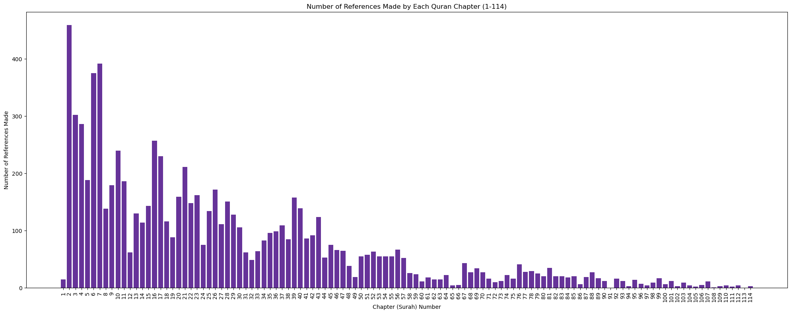
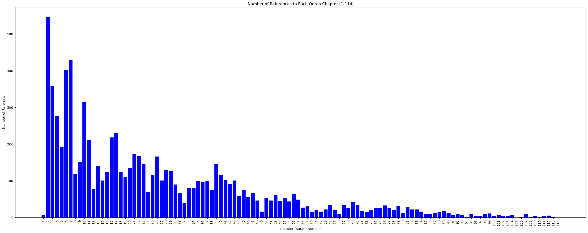

Exploring the Intertextual Cross-References in the Quran
What you are looking at is a visual representation of the Quran. Each thread you see represents one of over 8,000 intertextual cross-references within the Quran. These cross-references, or links, connect verses which reference, explain, quote, or elaborate on another. The colors of the threads are determined by the distance between chapters, and thus, length of the thread.

Visual representation of cross-references between verses in the Quran
The graph I have put together demonstrates the hypertextuality of the Qur'an. Analyzing Qur'anic intertextual references is useful for Tafsir al Quran bil Quran (TQBQ), which translates to "Exegesis of the Quran by the Quran." In this approach, one verse helps to explain another, doing two primary things: providing exegesis from the most authoritative source on the Qur'an (itself), and expressing literary excellence.
The Challenges of Systemizing TQBQ
TQBQ is not a modern concept—it has been used by classical scholars for centuries. However, it is challenging to systematize this form of exegesis due to the subjective interpretations scholars may apply to different verses. One exegete might identify a parallel between two verses that another exegete does not see. I wanted to create a visual representation of TQBQ.
To generate the graph, I used data from Professor Mun'im Sirry. His methodology on considering cross-references was rigourous and straightforward. It should be noted that these cross-references are not extremely esoteric; it is quite easy to see how each verse references one another, thus the representation above is a very conservative one. Despite not being exhaustive, the vast number of intertextual references I included is remarkable (especially considering that the Qur'an only contains 600 pages).
A Tool for Insight
Beyond aesthetic appeal, collecting data this way offers valuable insights. It allows us to explore how often chapters refer to one another, revealing patterns of connection throughout the Quran; it also gives us the opportunity to analyze different scholars' collections of TQBQ and see potential for biases. For example, certain chapters are referenced more frequently than others. This is useful for anyone interested in Quranic studies, as it gives a clearer picture of how the text explains itself.
To provide an easier view, I've created several graphs. The first shows the number of references each chapter makes to other chapters. You might notice certain patterns and begin asking questions, like: "Why does chapter 2 have so many references?" or "Is there a correlation between the length of a chapter and how often it's referenced?"

Number of references each chapter makes to other chapters

Number of times each chapter is referred to by other chapters
Additionally, we can observe the length of each surah, with longer chapters appearing at the beginning of the Quran and shorter ones toward the end.
Observations and Future Work
A clear observation is the correlation between the number of references and the length of a chapter. It's possible that more words naturally provide more opportunities for cross-reference. Another possibility is that Dr. Sirry might have started his analysis with the longer chapters and thus paid more attention to them. It's likely a combination of both factors.
While the data I used focuses on clear, exoteric references, there's still much work to be done, especially in mapping more esoteric references that are not immediately obvious. However, this is a task that I am not qualified for, as I am a college student with a passion for engineering and theology, rather than an expert in Quranic exegesis.
Other work would be to collect various scholars' TQBQ, visualize them, and note the overlaps. Seeing the overlaps provides a stronger case for "objective" cross-references. Seeing outliers can provide insight into the scholar's thoughts and methodology when doing exegesis.
Feel free to share your thoughts or suggestions for further improvements to this project.
Lastly, I want to clarify that the views expressed here are my own, and this work is intended to fulfill a need I saw, not to endorse any specific group or ideology.
Definitions
- Exegesis (Tafsir): An explanation or elucidation of the meanings of a work.
- Exegete (Mufassir): Someone who writes an exegesis.
- Esoteric (Baatin): Inward meaning that is not immediately obvious.
- Exoteric (Zahir): Outward meaning that is immediately obvious.
- Cross-Reference: Any time a verse clearly refers to another verse or explains its meaning.
- Tafsir al Quran bil Quran (TQBQ): A method of interpreting a Quranic verse using other Quranic verses.